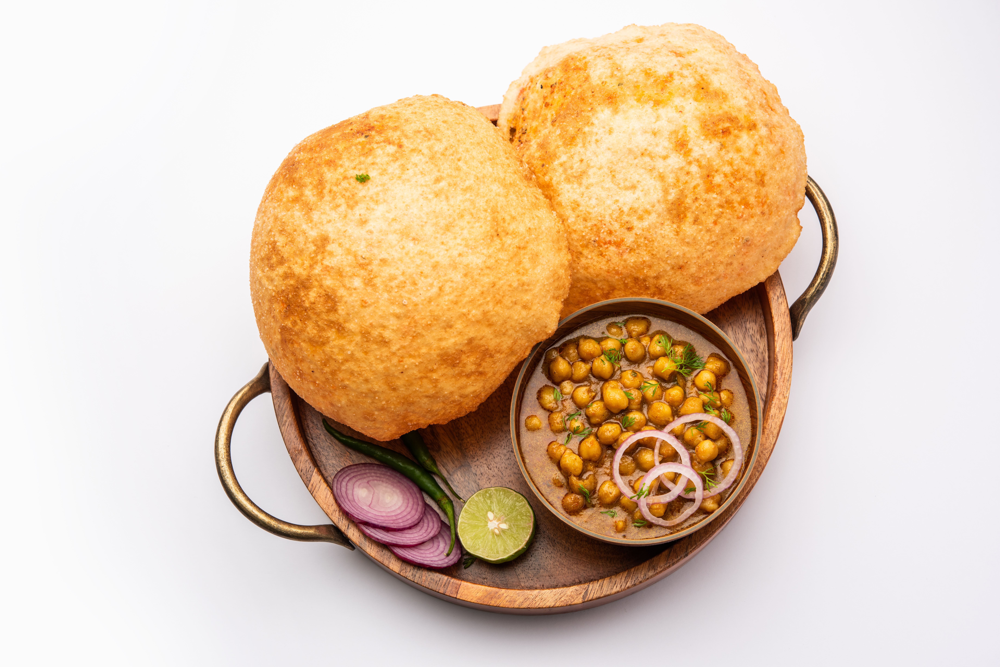

Chole Bhature

Description
Chole Bhature is a famous North Indian dish made with spicy chickpea curry (chole) served with deep fried fluffy
bread (bhature). It’s rich, slightly tangy, spicy, and usually eaten for lunch or brunch. The combination of
soft bhature and flavorful chole makes it one of the most popular Punjabi dishes.
Ingredients
For Chole
- 2 cups chickpeas (soaked overnight)
- 2 onions, finely chopped
- 2 tomatoes, pureed
- 2 green chilies, chopped
- 1 tbsp ginger garlic paste
- 2 tbsp oil
- 1 tsp cumin seeds
- 1 bay leaf
- 1 tsp turmeric powder
- 1 tsp red chili powder
- 1 tsp coriander powder
- 1 tsp garam masala
- 1 tsp chole masala
- Salt to taste
- 3 cups water
- Fresh coriander leaves for garnish
For Bhature
- 2 cups all purpose flour (maida)
- 2 tbsp semolina (suji)
- 1/2 cup curd
- 1 tsp sugar
- 1/2 tsp baking soda
- Salt to taste
- Water as needed
- Oil for deep frying
Steps
Making Chole
- Soak chickpeas overnight and pressure cook until soft.
- Heat oil in a pan and add cumin seeds and bay leaf.
- Add onions and cook until golden brown.
- Add ginger garlic paste and green chilies. Cook for 1 minute.
- Add tomato puree and cook until oil separates.
- Add turmeric, red chili powder, coriander powder, chole masala, garam masala, and salt.
- Add boiled chickpeas and water.
- Simmer for 15 to 20 minutes until thick and flavorful.
- Garnish with fresh coriander.
Making Bhature
- Mix flour, semolina, sugar, baking soda, curd, and salt.
- Add water slowly and knead into a soft dough.
- Cover and let the dough rest for 2 hours.
- Divide dough into small balls and roll into oval shapes.
- Heat oil in a deep pan.
- Fry bhature until puffed and golden on both sides.
- Serve hot with chole.
Homepage